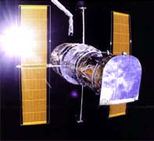

Hubble Space Telescope
The Hubble telescope has only a 2.4 meter mirror, but positioned outside the Earth's atmosphere it has surpassed much larger ground based instruments. The image quality was severely impaired by an improperly ground main mirror, but this problem was overcome by a December 1993 repair mission.
|
A sample of Hubble imaging
|

NASA image.
|
Since Hubble is in an orbit close to the Earth, it's perspective on space is very similar to that of an Earth-based telescope. However, the absence of the blurring effects of the atmosphere provide it a much clearer view of the universe. It has a resolution of 0.014 arc seconds, compared to an angular size of 1800 arc seconds for the moon. An arc second on the moon corresponds to about 1.92 kilometers on its surface, so Hubble has a resolution of about 27 meters on the moon's surface.
|
Index
Solar System Concepts
Telescopes |